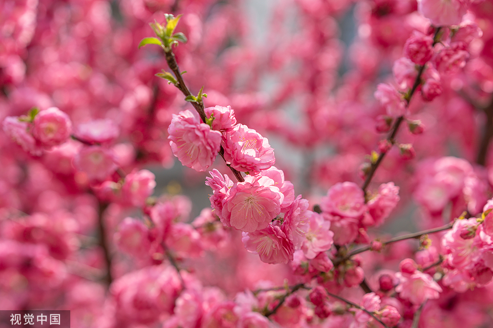

正·赤色系
| 名称 | HEX | RGB | CMYK | 展示 | 桃红 | #f0ada0 | R:240 G:173 B:160 | C:0 M:44 Y:32 K:0 |
桃红，如三月桃花初绽时的娇嫩，似胭脂晕染、又若朝霞轻抹，温柔里透着一丝明艳，是春天最甜美的颜色。  |
晨曦红 | #ea8958 | R:234 G:137 B:88 | C:0 M:58 Y:67 K:0 |
晨曦红（Dawn Red）是一种温暖柔和的红色，仿若晨曦初现时天空泛起的淡淡红晕，充满希望与宁静之美。 |
朱红 | #ed5126 | R:237 G:81 B:38 | C:0 M:78 Y:83 K:0 |
朱红（Vermilion）是一种明艳而浓烈的红色，带有微微橙调，古今皆用于绘画、器物与建筑，象征热情与吉祥。 |
陶瓷红 | #e16723 | R:225 G:103 B:35 | C:0 M:70 Y:91 K:0 |
陶瓷红（Ceramic Red）是一种富有光泽且略带柔和温暖感的红色，源自陶瓷釉料的经典色调，呈现出一种既古朴又充满艺术气息的独特魅力。 |
落霞红 | #cf4813 | R:207 G:72 B:19 | C:4 M:82 Y:99 K:0 |
落霞红（Afterglow Red）是一种温暖而柔和的红色，宛如夕阳西下时天边那抹渐渐消散的霞光，充满了宁静与浪漫的气息。 |
鹅血石红 | #ab372f | R:171 G:55 B:47 | C:19 M:89 Y:85 K:9 |
鹅血石红，如霞光映照大地，温润而深邃，宛若晨曦中的第一抹温柔，蕴含着岁月的静谧与深情。 |
枣红 | #7c1823 | R:124 G:24 B:35 | C:28 M:100 Y:86 K:33 |
枣红，色泽浓郁深沉，犹如熟透的枣果在秋阳下的静谧光辉，散发出一种温暖、沉稳的气质，仿佛承载着岁月的厚重与岁月的芬芳。 |
殷红 | #82111f | R:130 G:17 B:31 | C:27 M:100 Y:90 K:29 |
殷红，宛如燃烧的晚霞，在苍穹中缓缓绽放，深邃而不张扬，带着一丝神秘与热烈，温暖而不炽烈，仿佛诉说着岁月中无声的故事与深藏的情感。 |
藏花红 | #ec2d7a | R:236 G:45 B:122 | C:0 M:88 Y:23 K:0 |
8.藏花红，如同藏红花在晨曦中初绽的色泽，深邃而浓烈，散发出独特的香气与神秘感，温暖而高贵，仿佛是自然赋予的珍贵馈赠，低调却拥有无与伦比的魅力。 |
艳红 | #ed5a65 | R:237 G:90 B:101 | C:0 M:77 Y:49 K:0 |
艳红，馥郁而热烈，仿若盛开的玫瑰在晨露中微微舒展花瓣，娇艳中透着高贵，浓烈里藏着柔情，每一抹色彩都映射出生命的热情与浪漫，令人沉醉其中，难以忘怀。 |
苋菜红 | #a61b29 | R:166 G:27 B:41 | C:19 M:99 Y:86 K:11 |
苋菜红，深邃而浓烈，仿佛新摘苋菜叶在日光下晕染出的绛紫红色，沉稳中带着一丝灵动，既有大地的醇厚气息，又透着几分温润的生机，低调而不失风韵，宛如时光沉淀后的绢染色泽，悠然而独特。 |
茶花红 | #ee3f4d | R:238 G:63 B:77 | C:0 M:84 Y:60 K:0 |
茶花红，温润而雅致，宛如晨曦中悄然绽放的山茶花，色泽娇艳却不张扬，柔和的红中透着一丝清雅与从容，恰似微风拂过花瓣时的轻盈韵律，散发出一种宁静而隽永的美感。 |
唐菖蒲红 | #de1c31 | R:222 G:48 B:49 | C:0 M:93 Y:76 K:0 |
唐菖蒲红，浓烈而热情，宛如盛放的唐菖蒲在阳光下绽放出层层叠叠的艳丽，色泽鲜明而富有生命力，带着一种昂扬向上的气势，仿佛燃烧的火焰般炽热，却又流露出优雅的风姿。 |
淡曙红 | #ee2746 | R:238 G:39 B:70 | C:0 M:89 Y:62 K:0 |
淡曙红，柔和而雅致，如晨曦初现时天际微染的红晕，轻盈中透着温暖，宁静而不失生机，仿佛拂晓的微风轻轻掠过，留下浅淡却悠远的余韵，低调中蕴含着一抹温柔的诗意。 |
满江红 | #a7535a | R:167 G:83 B:90 | C:22 M:76 Y:54 K:12 |
满江红，浓烈而壮阔，仿佛翻涌的江水倒映着晚霞的炽热光辉，色泽深沉而激昂，透着铁骨铮铮的豪情与磅礴之势，既如燃烧的战旗般热血，又似千古忠烈的英魂，辉映天地，荡气回肠。 |
|---|